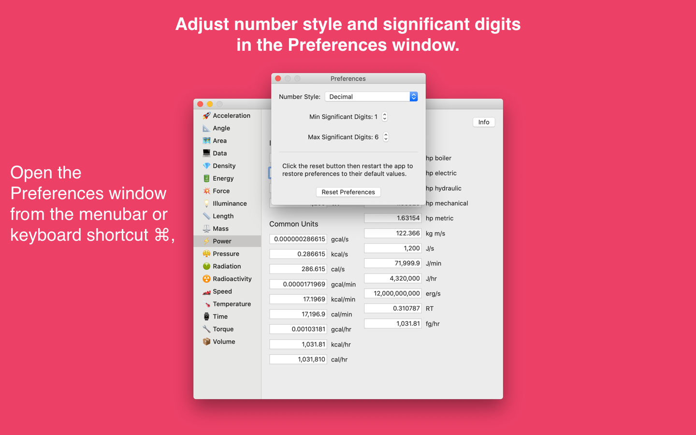
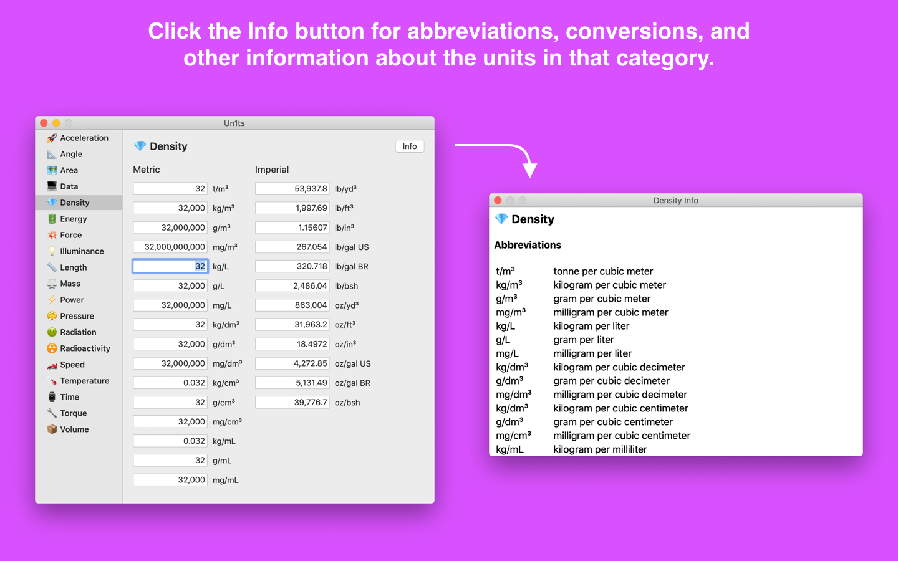

Un1ts
Un1ts is a comprehensive unit converter for the Mac. This native app is built with Swift and SwiftUI to support the latest features of macOS. Just enter a value in a field then press the Return key to automatically convert to all units in a category.
Categories for unit conversion include:
- Acceleration
- Angle
- Area
- Data
- Density
- Energy
- Force
- Illuminance
- Length
- Mass
- Power
- Pressure
- Proximate Analysis
- Radiation
- Radioactivity
- Speed
- Temperature
- Time
- Torque
- Ultimate Analysis
- Volume
App Store - Un1ts is available exclusively on the Mac App Store.
Email - Questions, comments, and other feedback.
Twitter - Announcements, questions, and other feedback.




Background
Un1ts was originally released in 2013 for the Mac. It was written entirely in Objective-C and was one of the first apps I released on the Mac App Store. In 2019, I decided to create a new version of the app written in Swift and SwiftUI.
Changelog
Un1ts uses calendar versioning for releases where major releases are Year.Month (v20.4) and minor releases are Year.Month.Day (v20.4.9). For example, v20.4 refers to the version released in April 2020.
- v20.6
- Proximate analysis conversion from as-received basis to dry and dry ash-free bases. Ultimate analysis conversion from as-received basis to dry and dry ash-free bases.
- v20.4.9
- Improved app icons for better visibility on high resolution displays. Provide higher resolution screenshots for the App Store.
- v20.4
- Available on the Mac App Store.
Acknowledgments
I would like to thank the following people for their invaluable advice: Jeff Biggus, Adam Byram, Lucas Derraugh, and Bill Morefield.
Privacy Policy
The Un1ts app does not collect any user data. Settings such as number style and significant digits are stored on the user's computer.
Developed by Gavin Wiggins © 2020